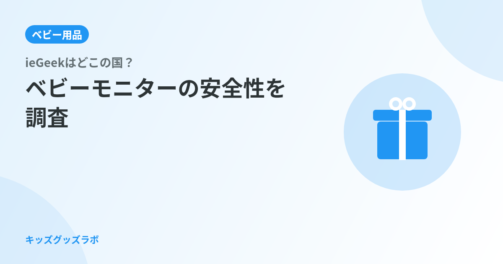

ieGeek SC2 ベビーモニター（300万画素・360°自動追跡・温湿度検知）
2.4GHz/5GHzデュアルバンドWi-Fi対応・泣き声/寝返り/咳検知・無料6秒クラウド録画
「ieGeekって中国製？Wi-Fiカメラは怖くない？」2児パパが調べた結論から言う
0歳の娘を一人にできる時間が増えてきたとき、ベビーモニターを本格的に検討し始めた。Amazonで上位に表示されたのがieGeekのSC2。レビュー件数が多く価格も手ごろだが、検索すると「どこの国？」「怪しい？」というサジェストが連なる。2歳の息子のときより選択肢が増えた分、逆に迷う。
先に結論を言う。 ieGeekは中国・深圳の「Shenzhen Globalebuy Co., Ltd」が運営するカメラブランドで、2005年設立。日本向け製品にはTELEC（技適）とPSE認証を取得しており、電波法・電気安全法の基準を満たしている。「得体の知れないコピー品」とは異なる。ただし、Wi-Fiを使うベビーモニターは適切な設定をしないとプライバシーリスクが生まれる。機器の品質とユーザー側の設定、両方から評価する必要がある。
この記事では、会社の素性・製品ラインナップ・技適の意味・Wi-Fiセキュリティの具体的な対策まで整理した。ieGeekを買うかどうか判断する前に読んでほしい。
ieGeekはどこの国のブランド？会社の正体を調べた
まずブランドの素性から確認する。
ieGeekは中国・広東省深圳市に本社を置く「Shenzhen Globalebuy Co., Ltd」が展開するスマートホームセキュリティブランドだ。設立は2005年で、防犯カメラ・ドライブレコーダー・ベビーモニターを中心に製品を展開してきた歴史がある。社名の「Globalebuy（グローバルイーバイ）」はeコマースに特化した展開を示している。
深圳はDJI（世界シェアトップのドローンメーカー）やAnkerの生産・開発拠点であり、電子製品の品質とコスト効率を両立させた企業が多く集まる都市だ。深圳＝粗悪品というステレオタイプは今の現実に合っていない。もちろん企業ごとの品質差はあるが、産地だけで判断するのは早計だ。
日本向けにはieGeek Japanの公式サイト（jp.iegeek.com）を運営しており、Amazon.co.jpにも公式ストアを出店している。日本語のサポート窓口も整備されており、海外ブランドとしては比較的日本市場への対応が手厚い部類に入る。
ieGeekのベビーモニターラインナップ：どのモデルが子育てに使いやすいか
ieGeekはベビーモニター用途で大きく2つのタイプを展開している。購入前にどちらが自分の使い方に合っているかを把握しておきたい。
| モデル | Wi-Fi | 画素数 | 主な検知機能 | 特徴 |
|---|---|---|---|---|
| SC2（ASIN: B0DCYY44QS） | あり（2.4/5GHz） | 300万画素 | 泣き声・寝返り・咳・温湿度 | 外出先からスマホで確認・360°自動追跡・6秒クラウド録画無料 |
| 5インチモニター型（ASIN: B0FJFG4J19） | 不要 | 1080P | 泣き声・夜間赤外線 | 専用5インチ受信機付き・電源を入れればすぐ使える・Wi-Fiリスクなし |
共働きで保育室と寝室を行き来しながら外出先でも確認したいならSC2（Wi-Fiタイプ）が向いている。育休中で家の中だけで使うなら、設定不要で使える5インチモニター型がシンプルで扱いやすい。
Wi-Fiタイプを選んだ場合は、後述するセキュリティ設定が必要になる点を念頭に置いておきたい。
技適（TELEC）とPSE認証：ieGeekは日本の法令をクリアしているか
日本でWi-Fi機器を使うには電波法に基づく技術基準適合証明（技適・TELEC）が必要だ。未取得の海外製品を使うことは原則として電波法違反になる。ieGeekの日本向け正規品はTELEC認証とPSE認証（電気用品安全法）を取得しており、この点はクリアしている。
技適マークの確認方法
Amazon.co.jpのieGeek公式ストアから購入した場合、製品本体または外箱に技適マーク（丸に「技」の文字）が印字されている。並行輸入品や非公式ルートからの購入では技適対象外の製品が届く可能性があるため、購入元には注意が必要だ。
総務省の技術基準適合証明等について（総務省 電波利用ホームページ）では、技適の意義と確認方法が解説されている。購入前に確認しておきたい。
PSEマーク（電気安全）
ACアダプターや充電器を含む電気用品を日本で販売するにはPSE（電気用品安全法）の適合が必要だ。ieGeekの日本向け製品はこれも取得済みで、電源周りの安全基準を満たしている。
最も重要な論点：Wi-Fiベビーモニターのセキュリティリスクと対策
ieGeekへの不安の声で最も多いのが「Wi-Fiカメラは乗っ取られないか」という懸念だ。子どもの寝室を映すカメラだけに、映像が外部に漏れることは避けたい。
結論から言えば、ゼロリスクとは言えない。ただしリスクは「ieGeek固有の欠陥」ではなく、Wi-Fi接続カメラ全般に共通する問題だ。適切な設定をすることでリスクは大幅に下げられる。
具体的なセキュリティ対策3点
-
パスワードを必ず変更する（最重要）
初期設定のパスワードは推測されやすい。設定直後に、英数字・記号を含む12文字以上のパスワードに変更すること。アプリ（ieGeek Cam）のアカウントパスワードも同様に強化する。 -
ルーターのファームウェアを最新に保つ
カメラ側だけでなく、自宅Wi-Fiルーターの脆弱性から侵入される事例が多い。ルーターの自動更新設定を有効にしておく。 -
使わないときは電源オフを検討する
就寝時間外など見守りが不要な時間帯は電源を切るか、アプリのカメラオフ機能を活用する。24時間常時稼働より接触面を減らすことがリスク低減につながる。
消費者庁もIoT機器（Wi-Fi接続機器）の使用上の注意点を公表しており、パスワード管理の重要性を強調している。消費者庁 子どもの事故防止ページも参考にしてほしい。
ieGeek SC2のアプリ（ieGeek Cam）は二段階認証の設定にも対応している。設定画面でオンにしておくことを強く勧める。
AmazonレビューとSNSで見えた評判の実態
購入者の声を横断して整理した。
ポジティブな評価
- 画質への満足度が高い：300万画素の昼間映像はくっきりしており、赤ちゃんの顔色・呼吸の起伏まで確認できるという声が多い。940nmの不可視赤外線を使った夜間映像も「赤ちゃんの睡眠を妨げず映る」と好評だ。
- 360°自動追跡の実用性：ハイハイや寝返りを始めた赤ちゃんが画面から外れにくく、追いかけ設定が実際に機能しているという評価が多い。
- 泣き声・温湿度検知のアラート精度：誤作動が少なく、実際に泣いているときに通知が来るという声が目立つ。温湿度データは部屋の環境管理に使っているユーザーも多い。
- 価格帯のバランス：8,000円前後で300万画素・自動追跡・温湿度検知を揃えるコストパフォーマンスを評価する声が多かった。
ネガティブな評価・注意点
- Wi-Fi接続が不安定になることがある：ルーターとの相性や距離によって接続が切れるという報告がある。2.4GHz帯は電子レンジなどの干渉を受けやすいため、5GHz帯で接続するか、ルーターとの距離を縮めることで改善されるケースが多い。
- アプリの動作がたまに不安定：スマートフォンのOSアップデート後などにアプリが固まるという声がある。アプリを最新版に更新することで多くは解消される。
- 日本語マニュアルの充実度：設定手順の説明が簡素という意見があった。公式サイト（jp.iegeek.com）のサポートページやYouTubeの設定動画を合わせて参照することで補える。
競合ベビーモニターブランドとの比較
ieGeekと同価格帯・同用途のブランドを比較して特徴を整理する。
| ブランド | 国 | Wi-Fi | 画素数 | 価格帯 |
|---|---|---|---|---|
| ieGeek SC2 | 中国（深圳） | あり | 300万 | 7,000〜9,000円 |
| BOIFUN | 中国 | 不要（専用受信機） | 720P〜2K | 8,000〜14,000円 |
| BabySmile ベビーアラーム | 日本（正規輸入） | 不要 | 映像なし（センサー） | 7,000〜9,000円 |
| Philips Avent SCD923 | オランダ | 不要（FHSS） | 音声のみ | 8,000〜12,000円 |
映像付きでスマホから外出先確認したいならieGeek SC2が価格帯で最有力候補になる。「Wi-Fiリスクをなるべく避けたい」「スマホ操作が苦手」な場合はBOIFUNの専用受信機タイプや、映像不要なら国産正規品のBabySmile（呼吸センサー型）が選択肢になる。
なお、BOIFUNについては別記事で詳しくまとめている。→ BOIFUNはどこの国？ベビーモニターのセキュリティと評判を徹底調査
日本での保証・サポート体制を確認する
購入後にトラブルが起きたときの対応も把握しておきたい。
Amazon.co.jpのieGeek公式ストアでは購入後1年間の標準保証＋1年の延長保証（メーカー登録で取得）を提供している。日本語でのメールサポートも対応しており、jp.iegeek.comからの問い合わせが窓口になる。
並行輸入品や第三者出品者からの購入では保証対象外になる可能性がある。最安値につられて出品元を確認しないで買うと、初期不良時に詰む。ieGeek公式ストアまたはieGeek Japan直営の出品元から買うことを強く勧める。
初期不良はAmazonの30日返品ポリシーが最も手軽な解決手段だ。「公式のサポート対応に時間がかかる」という声を踏まえると、30日以内に動作確認を済ませておくことをすすめる。
結論：ieGeekを選ぶ前に整理すべき3つのポイント
-
使い方に合うタイプか（Wi-Fi型 vs 専用受信機型）
外出先でスマホから確認したいならWi-Fi型のSC2。家の中だけで使うなら専用受信機型の方が設定が楽でリスクも少ない。自分の生活スタイルを先に決めてからモデルを選ぶのが正解だ。 -
Wi-Fi設定をきちんとできるか
SC2を使う場合、パスワード変更・ルーターの最新化・二段階認証の設定は必須だ。「スマホ操作はできるけど細かい設定は面倒」という場合は専用受信機タイプの方が使いやすい。 -
公式ストアから購入する
技適・PSEを確認するためには、Amazon.co.jpのieGeek公式ストアまたはieGeek Japan直営からの購入が必要だ。非公式ルートでは認証外品が届くリスクがある。
パパとしての本音を言えば、ieGeekの懸念点はブランドの素性よりも「Wi-Fiカメラという製品カテゴリーの特性」にある。この部分はBOIFUNだろうとsamsungだろうと、Wi-Fi接続カメラを使う以上は同じ問題として向き合う必要がある。ieGeek SC2自体は技適・PSE取得済みで、価格帯で見れば機能は充実している。設定をきちんとした上で使うのであれば、8,000円以下でここまでのスペックを揃えられるのは実用的だと感じた。
よくある質問
Q. ieGeekはどこの国のブランドですか？
A. 中国・広東省深圳市に本社を置く「Shenzhen Globalebuy Co., Ltd」が運営するブランドです。2005年設立で、カメラ・スマートホームセキュリティを専門に展開しています。
Q. ieGeekのベビーモニターは技適（TELEC）を取得していますか？
A. 日本向け正規品はTELEC認証（技適マーク）を取得しています。Amazon.co.jpのieGeek公式ストアから購入した場合は対象品が届きます。非公式ルートの並行輸入品は注意が必要です。
Q. ieGeekのWi-Fiカメラはハッキングされますか？
A. ゼロリスクとは言えませんが、パスワードの変更・二段階認証・ルーターの最新化を行うことでリスクは大幅に下げられます。Wi-Fiカメラ全般に共通する課題であり、ieGeek固有の欠陥ではありません。
Q. ieGeekとBOIFUN、どちらを選べばよいですか？
A. 外出先からスマホで確認したいならieGeek SC2（Wi-Fi型）、家の中だけで使いWi-Fiリスクを避けたいならBOIFUN（専用受信機型）が向いています。使い方を先に決めてから選ぶとミスマッチが減ります。